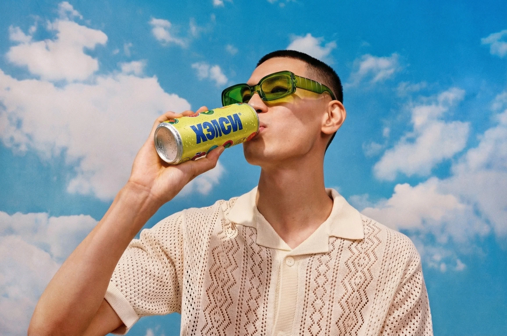
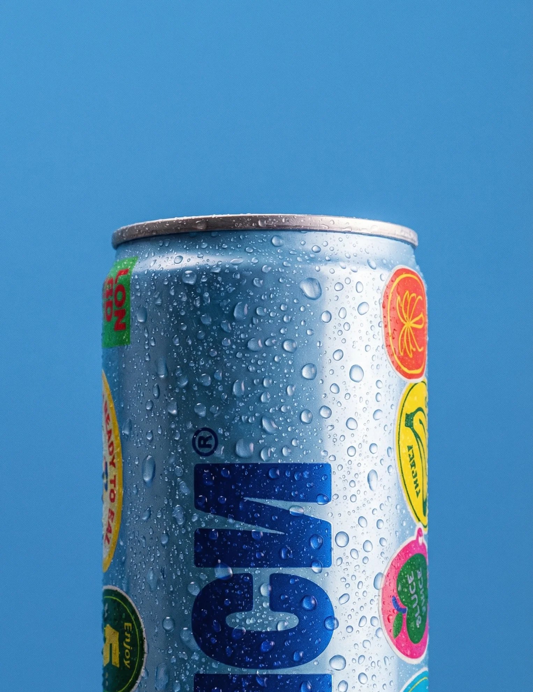
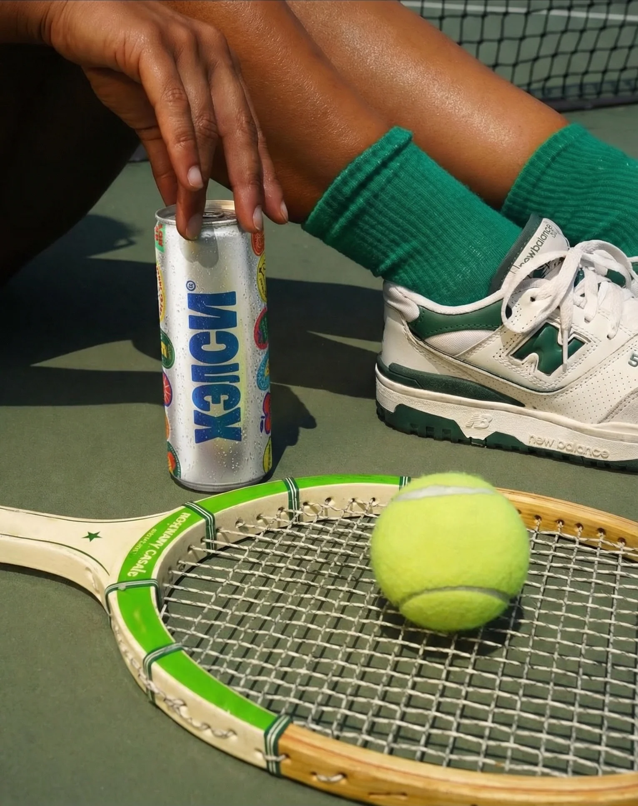
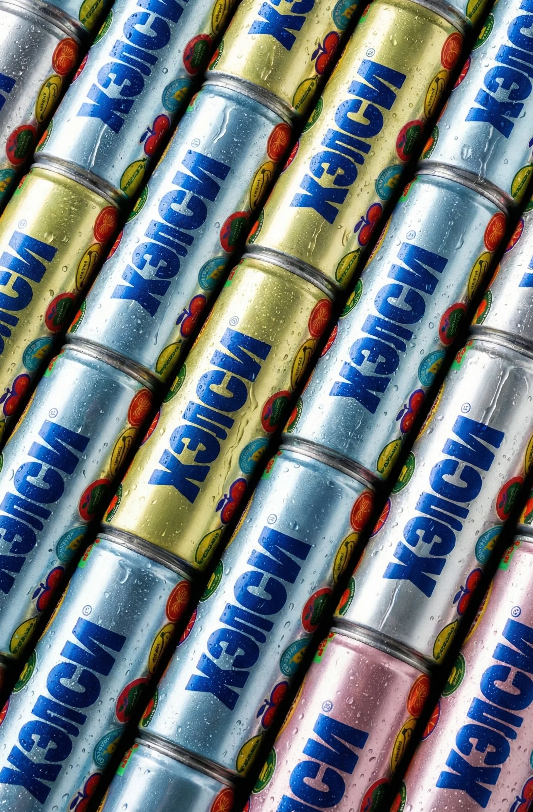
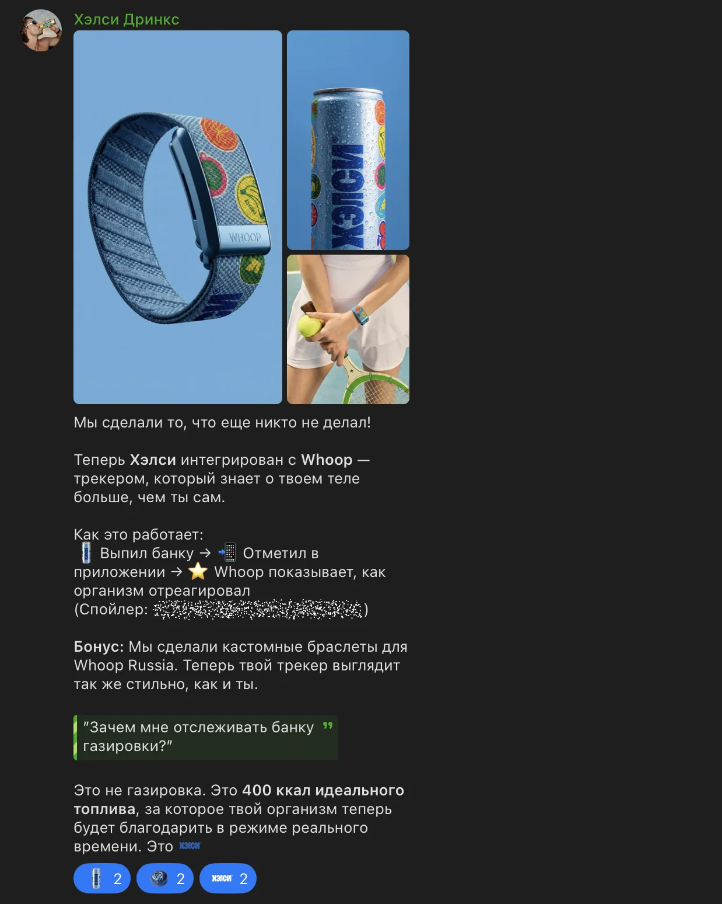

Кейс // 001
РИЧ X
NEIROFACTURA
О ПРОЕКТЕ
РИЧ — одно из ведущих диджитал-агентств РФ (Топ-5 в категории SMM), реализующее проекты для Яндекса, Альфа-Банка, МТС и FMCG-гигантов. Нашей задачей было выступить инфраструктурным партнером: перевести часть продакшена агентства на автономные ИИ-рельсы для масштабирования без раздувания штата. Технологическим полигоном стал концепт выдуманного FMCG-бренда «Хэлси».
ЗАДАЧА
Современный SMM в сегменте FMCG сместился в сторону неформального общения «на ты»: короткие форматы в Telegram, эффект «дружеского чата» и мгновенная реакция на тренды. Базовые нейросети не способны генерировать такой контент — они звучат сухо и не понимают иронии. Агентству требовалась система, способная автономно производить как сложную продуктовую графику, так и живые тексты в актуальном культурном коде.





РЕШЕНИЕ
NEIROFACTURA развернула для креативной команды РИЧ гибридную инфраструктуру:
Креативный Copilot. Мы спарсили по 250+ постов с 4 референсных Telegram-каналов брендов. Отфильтровали датасет по показателю Engagement Rate (ER), выделив математически успешные паттерны. На этой базе обучили субагентов, дополнительно обогатив их «базой мемов» для точного понимания контекста и отсылок.
Визуальный синтез. Настроили генеративные пайплайны (Midjourney / Nano Banana Pro / Kling) для потокового создания лайфстайл-имиджей и продуктовой графики, строго подчиненной бренд-гайдлайнам, полностью отказавшись от стоков и реальных съемок.
Креативный Copilot. Мы спарсили по 250+ постов с 4 референсных Telegram-каналов брендов. Отфильтровали датасет по показателю Engagement Rate (ER), выделив математически успешные паттерны. На этой базе обучили субагентов, дополнительно обогатив их «базой мемов» для точного понимания контекста и отсылок.
Визуальный синтез. Настроили генеративные пайплайны (Midjourney / Nano Banana Pro / Kling) для потокового создания лайфстайл-имиджей и продуктовой графики, строго подчиненной бренд-гайдлайнам, полностью отказавшись от стоков и реальных съемок.
РЕЗУЛЬТАТЫ
Внедрение ИИ-инфраструктуры позволило агентству разорвать шаблон «больше клиентов = больше штата». РИЧ получил собственный внутренний нейросетевой продакшн, готовый к масштабированию на федеральные проекты.
7 ДНЕЙ
От концета до работающей системы
-65%
Затрат агентства на подобные SMM-проекты
5х
Скорость создания контента (текст + визуал)